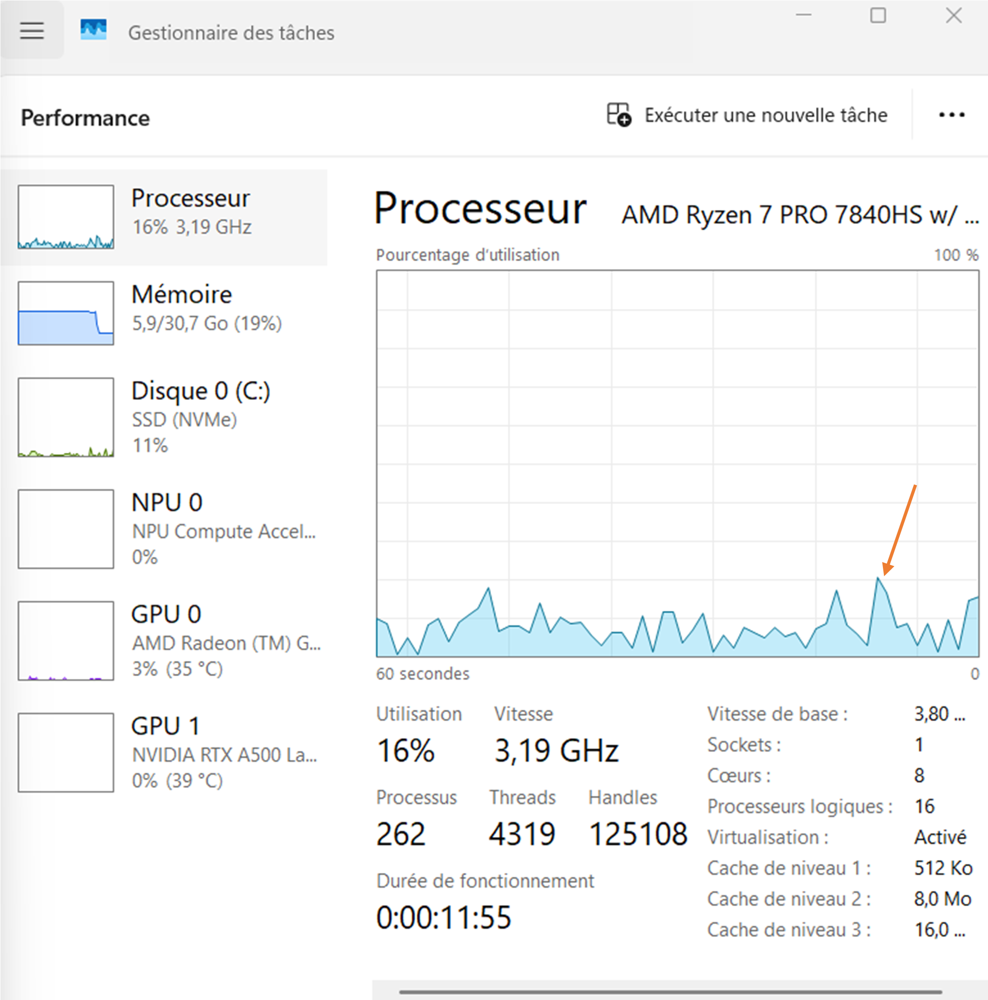
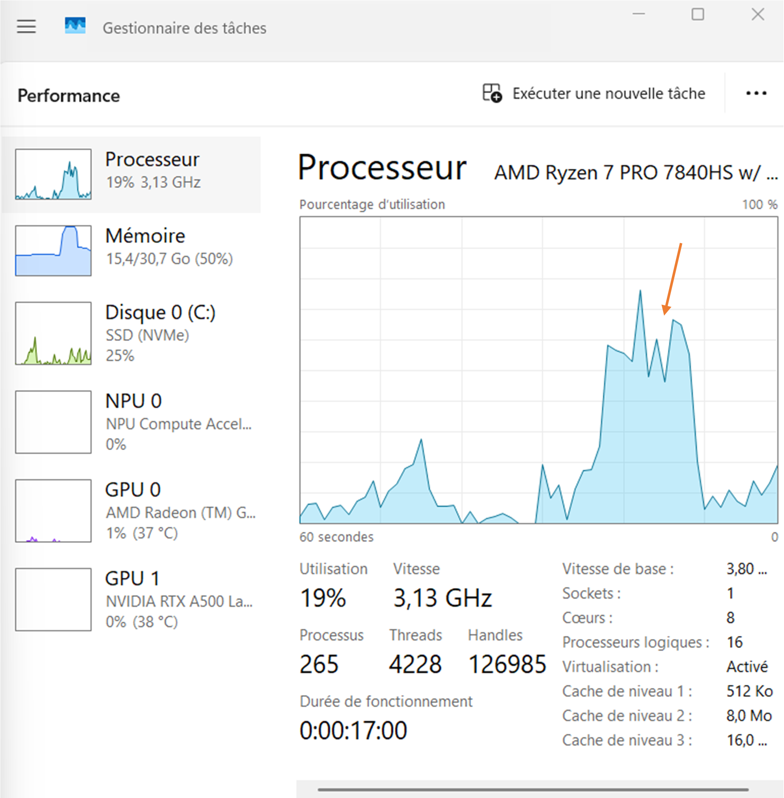

Tutorial 0 : testing of the installation and of the multi-threading
Introduction
The present script is written in the file demo_script_0.m in the demonstration folder. Just open it in your matlab and run it. It is a basic example that tests the sparse matrix-vector multiplication with multi-threading (one thread per channel). This script is kind of the test of the installation. If it runs smooths like described here, then you can consider the toolbox is installed. Just make sure you have at least 32 Go of memory to run that script.
Sparse matrix-vector multiplication
Initialization
The first section creates a relatively large sparse matrix G that will serve for the sparse matrix-vector multiplication. You don’t need to understand that code. If you are curious, you may just want to know that G in the present case is a gridding matrix from a radial trajectory t to a Cartesian gridd with size N_u and gridd spacing dK_u (= 1/FoV).
N_u = [384, 384, 384]; dK_u = [1, 1, 1]./440; t = bmTraj_fullRadial3_phyllotaxis_lineAssym2(384, 22, 5749, 1/440, true, 0); t = reshape(t, [3, 384, 21, 5749]); myMask = (rand(1, 5759) < 1/100); t = t(:, :, :, myMask); ve = bmVolumeElement_voronoi_full_radial3(t); ve = min(ve, prod(dK_u)); G = bmTraj2SparseMat(t, ve, N_u, dK_u);
Random data vector with one channel
The second section creates a random data vector y with only one channel but with appropriate size to be multiplied by G.
nCh = 1; y_real = rand(size(t, 2)*size(t, 3)*size(t, 4), nCh, 'single'); y_imag = rand(size(t, 2)*size(t, 3)*size(t, 4), nCh, 'single'); y = y_real + 1i*y_imag;
Matrix-vector multiplication with one channel
Open your system monitor and observe the activity of your CPUs while evaluating the following section:
x = bmSparseMat_vec(G, y, 'omp', 'complex', false);
You should not observe anything special actually, maybe just a small peak like on the following figure:

This experiment serves as comparison for the follwing two sections.
Random data vector with multiple channels
As previously, we create a random data vector y but with 32 channels this time. Said differently, we creat a list of 32 random vectors with appropriate size to be multiplied by G.
nCh = 32; y_real = rand(size(t, 2)*size(t, 3)*size(t, 4), nCh, 'single'); y_imag = rand(size(t, 2)*size(t, 3)*size(t, 4), nCh, 'single'); y = y_real + 1i*y_imag;
Matrix-vector multiplication with multiple channels
Open your system monitor and launch again the matrix-vector multiplication as previously. Observe again the activity of your CPUs while evaluating the.
x = bmSparseMat_vec(G, y, 'omp', 'complex', false);
You should now observe a large peak of CPU activity that corresponds to the parallel execution of multiple threads (one per channel) as on the following figure:

If you could successfully run that experiment, congratulation ! Your installation is working. Go directly to the next demonstration scripts to reconstruct your first MR images.
{kind=link}
{kind=link}
Further explanation
For the moment, there are four kinds of sparse matrices involved in Monalisa : gridding matrices, their transpose matrices, deformation matrices (which are actually also akind of gridding matrices), and their transpose matrices.
A gridding matrix will usually be written Gu and its transpose Gut. The task of a matrix Gu is to gridd some
data living on a Cartesian gridd onto a non-cartesian trajectory. The operation performed by Gut sent data living on the
non-cartesian trajectory back onto the Cartesian gridd, but it is NOT the inverse operation of Gu. Matrix Gut
is the transpose of Gu, not the inverse. The gridding matrices are not unitatry. Gridding matrices have in general no inverse.
We emplemented in Monalisa another sparse matrix which behaves approximately like an inverse of Gut in case the non-cartesian
trajectory is well sampled. We write usually this matrix Gn. If you multiply an image vectory by Gu and then again by Gn,
you will get approximlately the original image vector if you non-cartesian trajectory is well sampled.
All what was said for Gu and Gut is also true for Tu and Tut. The deformation matrices are just a special
case of gridding matrices for which the non-cartesian trajectory has exactly as many points as the number of
voxels in the Cartesian grid. Given an image vector, multiplying it with Tu will deforme it. Multiplying it with an approximative
inverse of Tu, that we usually call Tn, will bring it back close to the original image. This cannot be achieved with Tut,
which is the transpose matrix of Tu, not its inverse.